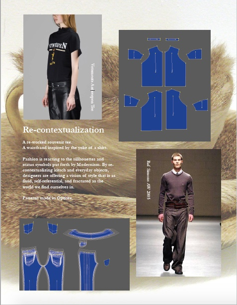

The background of this page is Margiela's SS 'Artisinal' 2017 Show (link). It references deconstruction, social media, isolated communities, and pioneers. It's a push-and-pull between past and present, connected and alone, polished and in-progress.

Above, I've included flat patterns that I've designed and two garments that I've made. Fashion inspires me because it strives to create meaning and beauty out of a utilitarian need. I want to take this impulse and apply it to other areas of the human experience.